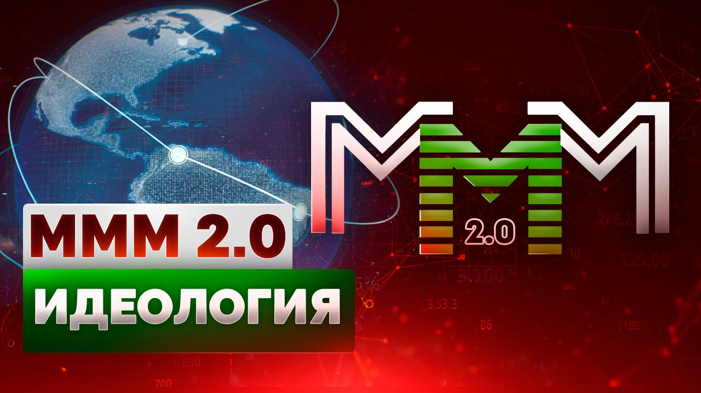

Регистрация в телеграм-боте
По ссылке можете прочесть Кодекс участника МММ

Современный мир плох. Он негуманен, нечестен и несправедлив. Это мир денег. Он – не для людей. Он – для тех, кто эти деньги делает, для банкиров и финансистов. А люди лишь выполняют при них роль какой-то обслуги. Дворцы им подметают.
Что лежит в основе благосостояния общества? Труд. Но тогда почему банкир живёт в сто, в тысячу раз лучше рабочего? Крестьянина? Биржевой спекулянт почему живёт лучше? Да все они! Они что, больше трудятся? Чушь! Смешно и говорить даже. (Да они даже и не производят ничего! Никаких материальных ценностей.) Тогда почему?
Не знаете? Более того, удивляетесь, наверное, сейчас, всё это читая, причём совершенно искренне: «Ну, как?.. Банкир и рабочий! Это простой работяга, как я или мой сосед Васька, что ль? Хм, сравнили тоже. Банкир это банк, деньги… Связи! А мы с Васькой кто? Никто! И звать нас никак. Естественно, банкир живёт лучше нас».
А между тем, ничего «естественного» тут нет. Просто все так уже привыкли к подобному положению вещей, что воспринимают его как должное. Как нечто само собой разумеющееся. Что так устроен мир, банкир и должен жить лучше, и иначе и быть не может. Но иначе быть – может!!
Так почему всё ж таки? Почему банкир трудится меньше, а живёт лучше? Лучше рабочего у станка, шахтёра в забое? А? Впрочем, интуитивно вы уже и сами нащупали ответ. Потому что «банкир это банк, деньги». Вот! Именно! ДЕНЬГИ! В них-то вся и суть. Основа основ. И вот о них-то, о деньгах, нам и следует поговорить поподробнее.
Итак, что же такое деньги? Никогда не задумывались? Средство расчёта? Мерило труда? Как нам внушают с детства, буквально вдалбливают чуть ли не с пелёнок: «Надо трудиться, работать!.. Деньги сами с неба не валятся. Их надо честно и в поте лица зарабатывать!..» И пр., и пр., и пр. Знакомо, не правда ли? До тошноты просто. (Скажите это, кстати, какому-нибудь Абрамовичу. «Честно и в поте лица» всё заработавшему. Все свои миллиарды. Ну, так, по приколу. Вот обхохочетесь! :-))
Да, «надо». Трудиться. Только что в итоге? Копеечная пенсия и полуголодная старость? Нищета… Всю жизнь прогорбатился на чужого дядю, у тебя отняли все силы и всё здоровье, выжали как лимон, а потом просто выбросили на помойку, как обычный мусор, как отработанный материал. Это – «надо»? А ведь таковы реалии. Ужасающие реалии современного общества. Именно это всех нас в итоге и ждёт почти наверняка; именно этим в нынешнем мире у подавляющего большинства людей всё и заканчивается. Как до этого закончилось у их матерей и отцов, бабушек и дедушек… Как закончится, при нынешнем положении вещей, и у их детей, внуков… правнуков… Потом, в свой черёд, и у их детей и внуков… И у их…Так устроен мир.
Почему? Это же всё неправильно, несправедливо?! Так не должно быть! Почему одни имеют всё, а другие ничего? Почему одни купаются в роскоши, с жиру бесятся, а другие концы с концами еле сводят? Не знают, чем детей кормить. Хотя и те, и те – «честно работают»? Почему?! Ведь все же мы – люди, братья? Все же мы – «равны»? Тогда почему??!!
Да потому что всё кругом – ложь. Одна огромная, сплошная, чудовищная, нарумяненная ложь. Не верьте ничему, что вещают вам ежедневно с телеэкранов сытые и холёные хозяева жизни.
И люди вовсе не равны, и деньги совсем даже не мерило труда. Всё это враньё. Наглое и беззастенчивое. Враньё, враньё, враньё и ещё раз враньё! Развесистая клюква. Лапша, которую вам, ухмыляясь, вешают на уши. Зачем? А чтобы легче было вами управлять.
Вот вы и олигарх. (Да обычный никчёмный депутатишка даже!) Вы равны? В чём? Живёте вы по-разному, питаетесь по-разному, отдыхаете по-разному. Да он в день тратит больше, чем вы за год! У него жена из куршавелей не вылезает, а ваша?.. Он в лучших швейцарских клиниках лечится, а вы где? Его дети и ваши?.. Сравнили? Ну, и в чём же вы «равны»?
А, наверное, в правах? Чего-то про права-то я и позабыл. Как, типа, в нашей российской Конституции записано, да? (На заборе, кстати, тоже много чего написано. Хорошего. И умного. Почитайте на досуге. Проникнитесь. :-)) Ну-ка-ну-ка! И какие же это, скажите на милость, у вас с ним прямо права такие равные-преравные? Просто любопытно?
Право на труд? Что ж, есть у нас в стране такое право, есть. Кто спорит. Трудитесь! На благо. Вы – у станочка на заводе, а он… Cuum cuique, как говорится. Каждому своё.
Право избирать и быть избранным? Хм… Ну, избирать-то, это, конечно, пожалуйста. Избирайте на здоровье. Голосуйте! (Чуров всё равно всё правильно посчитает. :-)) А вот насчёт «быть избранным»… Вы избираться, что ль, куда-то собрались? А денежки у вас есть? Пети-мети? Золотой запасец? На предвыборные кампании там всякие и пр.? Нет? Нема? Ну, так и дышите ровно. Идите к своему станку, вкалывайте и дальше и не рыпайтесь. Не суйтесь со свиным рылом, да в калашный ряд. Он для тех, которые почище.
Что там ещё?.. Впрочем, не суть. Нет даже смысла дальше продолжать. Всё уже и так ясно, надеюсь. Какие у Вас у обоих «равные» права, и у кого они равнее.
Это касательно равенства всеобщего и братства. Разобрались, вроде.
Теперь перейдём к деньгам. Про «мерило труда» не будем. Это сказки для идиотов. Никакое они вовсе не «мерило». (Иначе бы вы как сыр в масле катались. Или вы, может, мало трудитесь? :-)) Но тогда что же они?.. Узы. Оковы. Цепи. Прочные и нерушимые цепи, которые надёжнее любой стали удерживают в повиновении рабов. Каких ещё рабов? В 21-м веке?! Каких-каких!.. Да нас с вами!!! Всех вокруг! Вас, меня, его, её… Всех! Ибо все мы – рабы. Рабы денег. Точнее, тех, кто их печатает. Наших с вами хозяев.
Ничегошеньки ровнёхонько за все эти столетья на земле не изменилось. О-хо-хо!.. Так мы и живём до сих пор при рабовладельческом строе. Внешне только всё покультурней стало. Поделикатней и поизощрённей. Кандалы теперь не тяжёлые ржавые и стальные, а – незримые. Невесомые и незаметные. Их словно как и нет. Иди, куда хочешь. Делай, чего хочешь. Ты – свободен!
Но на самом деле они – есть. И ни черта ты не свободен! «Свобода» эта – иллюзия. Деньги! Вот во что всё упирается. Ну, куда ты можешь «пойти» без денег? Сейчас не каменный век, в пещере не поселишься, в шкуры звериные не оденешься. Мамонта не добудешь. (Да и где они, блин?! Эти мамонты? :-)) Нужен дом, одежда… Пища. А это всё деньги, деньги, деньги… И опять деньги. Ведь всё вокруг – только за деньги. Без них, проклятых, ни шагу! А где их взять? Правильно, заработать. За-РАБ-отать. Слышите? Звон цепей, свист кнута и крики надсмотрщиков?
Вы никогда не задумывались о том, что торговать собой аморально? Что это сродни проституции? Продавать собственные силы, ум, своё время, свою единственную жизнь… Чем это, собственно, отличается от торговли собственным телом? Да, но должны же люди работать, возразите вы. Если все работать перестанут, это что ж тогда будет?! Опять в пещеры переселимся и в шкуры звериные все оденемся?
Правильно. Всё правильно. Очень разумно, логично и доходчиво. Как дважды два! (Даже я понял. :-)) Я же и говорю, что ничего практически за все эти века на земле не изменилось. И столь же «убедительные» доводы звучали наверняка ещё и во времена оны. Когда их втолковывали рабовладельцы своим строптивым, непонятливым рабам. Которые РАБотать на них почему-то не хотели. (Глупые! :-)) А позже, уже сравнительно недавно, уже в исторические времена, и помещики своим крепостным: «Ведь если вы работать, ироды, перестанете, землю пахать, сеять и жать, то что же это тогда будет-то?! Всё рухнет, всё общество!! Да мы все с голода передохнем!!! Одичаем!»
Да, работать необходимо. Трудиться, созидать, создавать что-то нужное, общественно-полезное. Иначе общество погибнет. Деградирует. Но трудиться надо, во-первых, добровольно, а не за миску похлёбки, не для того только, чтобы просто выжить; заниматься надо тем, что тебе нравится, что тебе по душе!
И, во-вторых, коли уж на то пошло, раз надо – то именно всем. Все ведь равны? Вот пусть все и трудятся. Ситуация же, что одни зарабатывают деньги (в шахте, у станка! потом солёным да кровавыми мозолями их добывают!) а другие их просто рисуют (болтая ножками и потягивая дорогое виски или коньячок) – ненормальная. Неприемлемая и недопустимая в принципе. И никаких «объяснений» и оправданий такому положению вещей быть не может. Абсолютно!
Деньги – это всего лишь резаная бумага, фантики, ничем реальным не обеспеченные, и их, соответственно, попросту рисуют. (Ну, печатают. :-)) А потом раздают рабам в качестве «платы за труд». Дадут лишний фантик (повысят зарплату :-)) – и рабы счастливы. (Фильм «Свадьба в Малиновке» помните? «Бери, я себе ещё нарисую!» :-)) Шокированы? Увы, но такова селяви. Наша с вами горькая реальность.
Как устроен финансовый мир? Пирамида. На вершине ФРС, Федеральная Резервная Система США (аналог нашего Центробанка), которая печатает доллары. Сколько? А сколько захочет, столько и напечатает! Нет, естественно, каких-то своих, внутренних норм и правил она при этом придерживается, старается, к примеру, не печатать долларов слишком уж много, чтобы они вконец не обесценились, и пр. и пр. Но в принципе – сколько захочет. Своя рука владыка. Внешних ограничений у неё, по крайней мере, нет никаких. Совершенно! Только лишь соображения целесообразности.
Ниже стоят центробанки разных стран, ещё ниже – все остальные, местные национальные банки. (Это, конечно, всё несколько упрощённо, но в целом – соответствует. Картину общую отражает.) Зачем вообще нужны банки? О-о!.. Образно говоря, банки играют роль кровеносных сосудов в общественном организме. Через них деньги (кровь) от сердца (Центробанк) поступают во все его члены и органы. Омывают их, несут им жизнь!.. (Это не я. Это любой учебник экономики. :-))
Причём здесь доллары и какое отношение вся эта ихняя ФРС имеет к нам, грешным? А самое что ни на есть прямое. Непосредственное. Доллар ведь мировая валюта. (А вы и не знали? :-)) Скажем, наш родной российский Центробанк («одна маленькая, но гордая птичка» :-)) рублей напечатать без разрешения америкосовской ФРС – ни-ни-ни! Ни в коем разе! Поставили Америке нефти и газа на миллиард долларов (на вагон резаных цветных бумажек с портретами великих американских президентов ) – вот теперь можем и рублей на миллиард долларов со спокойной совестью напечатать. Теперь нам – позволено. Только так. А иначе и из МВФ выгонят, и вообще рубль свободно конвертируемой валютой не будет. (И куда мы тогда со своими деревянными денемся? :-)) Но это бог с ним. Это уже тема вообще отдельного разговора. (На блоге на моём потом поищете. :-)) Не будем отвлекаться. Вернёмся к пирамиде.
Ну, хорошо. «Кровеносные сосуды!.. омывают!..» – всё это, конечно, очень бла-агродно, но вот главный-то вопрос: почему всё же банкир лучше рабочего-то живёт? На него ведь мы ответа так до сих пор и не получили. Ну и что, что он кровеносный сосуд? Премию ему за это давать? Талоны на усиленное питание? А я, вон, дома строю. Или хлеб пеку. Это тоже очень важно. Он что, больше моего работает? Нет. Тогда почему?!
Да, и ещё вдогоночку. Вопросец. Я вот работаю-работаю, пашу, как папа Карло, с утра до ночи, для общественного блага, типа, стараюсь, а всё с кредитами никак расплатиться не могу. И все мои знакомые точно так же. Это как, нормально? Это же явно всё неправильно и несправедливо! Такая вечная кредитная кабала. А кому я должен? Банкам!! Этим кровеносным сосудикам, м-мать их за ногу! Всё, блин, омывающим. Нафиг мне нужны такие омывания! Дурят нашего брата, короче, вот и всё. Как обычно. Пользуются тем, что нам, простым работягам, разбираться во всём этом некогда, во всех этих хитромудростях, семью кормить надо. Вот и пользуются. На нашем горбу, гады, катаются. А то «члены и органы»!.. Знаем мы эти члены и органы!! Да я!!!..
Тише, тише! Спокойнее. И давайте тогда разбираться вместе. Хорошо? Спокойно и не торопясь. Только придётся уж поднапрячься, предупреждаю сразу. Не так-то просто распутать за пару минут то, что поназапутали за века. Лучшие и изощрённейшие умы человечества. Поднаторевшие в этом своём иезуитском мастерстве.
Но – попытаемся. По крайней мере, продемонстрируем кое-что наглядно. Из жизни современных банков. На живом примерчике, так сказать, покажем всё. (Чтоб подоходчивей. Вам понравится! :-))
Итак, представьте себе следующую, весьма обыденную ситуацию. (И следите за руками! :-))
Пусть есть некие Коля и Оля. И есть ещё Иван Иваныч, банкир Коли и Оли, они оба у него деньги свои хранят. (Поэтому – по имени-отчеству, с уважением. :-))
Коля очень хочет купить у Оли… ну, скажем, велосипед. Но у него нет денег. Точнее, есть, но мало – всего только 10 рублей, а Оля хочет за свой драгоценный велосипедик аж целых 100. Проблема!
Как поступает Коля? (Ну, очень ему хочется! Загорелся парень! :-)) Вручает Оле эти свои 10 рублей в качестве задатка и просит слёзно никому больше велосипеда пока не продавать. Скоро, мол, он и остальные деньги принесёт. А сам тем временем бежит в свой банк, к уважаемому Иван Иванычу, за кредитом, на недостающие 90.
Денег у Иван Иваныча у самого сейчас как на грех негусто, но он знает прекрасно про 10 рублей, которые Коля уже отдал Оле. А куда их Оля денет? Правильно, в банк свой положит, к Иван Иванычу всё тому же. Поэтому Иван Иваныч просит Колю прийти завтра. В расчёте на то, что назавтра эти олины 10 рублей у него уже очутятся.
Так оно всё и происходит. На следующий день Оля приносит 10 рублей в банк, банк выдаёт на эти 10 рублей кредит Коле. Коля тут же вручает их Оле, та снова кладёт в банк, банк снова выдаёт их в качестве кредита Коле и т.д. Пока дурачок-Коля таким образом на велосипед себе не насобирает.
(Не запутались ещё? Терпите-терпите! Говорю же, демоны тыщу лет запутывали. Глаза вам отводили. Экономисты-финансисты, тудыть их в качель! Но ничего. Распутаем. Разберёмся! :-))
В оконцовке. Что же мы имеем? Велосипед перешёл-таки от Оли к Коле (вау! :-)), но зато Коля должен теперь банку (Иван Иванычу) 90 рублей, а банк, в свою очередь, должен 100 рублей Оле.
Другими словами, те 10 рублей, которые изначально только и были у Коли, превратились неким волшебным образом уже в целых 200! (190 рублей долгов плюс 10 рублей реальные.)
(А могли бы и в тысячу. И в миллион! И в миллиард!! Если бы покупка подороже стоила. Просто червонец бы этот подольше по рукам погулял, побольше бы циклов своих совершил, кругооборотов. Вот и всё. :-))
Это что же такое получается? Ратуйте, люди добрые! Банки, выходит, тоже деньги плодят?! Мало нам ФРС (пёс уж с ней!), но теперь ещё и банки? (Все, короче, кроме нас с вами. Одни мы не при делах на этом празднике жизни. Вот бы тоже чуток поплодить. Порисовать! :-)) Причём совершенно бесконтрольно ведь плодят! А мы тут ещё удивляемся, почему же это банкир живёт лучше? Вот дурачки-то наивные! Ясно теперь, почему. Кто деньги рисует, тот и живёт! :-))
Но и этого мало!! Бедный Коля с банком теперь не рассчитается НИ-КОГ-ДА! Как бы усердно он ни работал. (Просто он, глупый, ещё об этом не подозревает. Что он теперь в рабстве у банка, в кабале кредитной на веки вечные.) Ведь тех 90 рублей, которые он должен Иван Иванычу, просто нет в природе! Их не существует. Вообще! Хитрый Иван Иваныч сделал их из ничего, сотворил буквально из воздуха! Щёлк! И 10 рублей превратились в 200.
Да, но банк ведь и сам должен Оле 100 рублей, резонно возразите вы. Он тоже, получается, у Оли в кабале и рассчитаться с ней никогда не сможет? Так в чём же тогда его профит? В чём тут фокус?
Ха! В чём фокус. Да в том, что таких оль у банка много, тысячи и миллионы, и все они одновременно за своими деньгами к нему никогда не явятся. Придёт одна Оля – банк ей деньги десяти других оль отдаст, только и всего. Т.е. банку его долг совершенно не страшен и не обременителен. Он, по сути, виртуальный, чисто на бумаге лишь существует. (Ну, или в компьютере. :-)) Реально же платить его никогда не придётся.
(В случае паники разве что. Когда перепуганные оли примчатся вдруг за своими деньгами – все разом! А вы думали, почему банки лопаются? Вот именно поэтому. Потому что денег там на всех оль не хватает. Воздух там один, на 90%. Сиреневый туман. :-))
Ред. — если не поняли этот вихрь событий в банковских махинациях, то посмотрите анимацию:
Ну, и про банковский мультипликатор уж заодно посмотрите:
Итак, у банка всё нормально. Он цветёт и пахнет. О нём можно не беспокоиться. Но совсем иначе дело обстоит у Коли. Вот ему-то платить – придётся! Сполна!! И ещё как придётся-то! (С процентами и штрафами. Сами знаете.) Брать новые кредиты, потом ещё следующие,.. и ещё,.. и так до бесконечности, до самого конца, до самой своей смерти. Выхода из этой кредитной удавки нет. Не существует! В принципе. Всё! Ловушка захлопнулась. Коля теперь вечный должник банка. Он его раб. Он будет на него теперь пахать, пахать, пахать и пахать… Пока не умрёт. И всё равно не расплатится. А потом будут пахать его дети, .. внуки… Они тоже все будущие рабы банка. Точнее, той чудовищной и людоедской мировой финансовой системы, которая весь этот безжалостный и бесчеловечный механизм породила. И которая должна наконец быть уничтожена.
Финансовый Апокалипсис! Только он один может разорвать наши финансовые цепи и всех нас спасти. Освободить наконец от векового рабства. В его всеочищающем пламени сгорит бесследно старое и зародится новое. Сгорит и по ветру перемен развеется ФРС, этот проклятый ненасытный спрут, паук, опутавший своими липкими финансовыми сетями весь мир; сгинут и сгорят банки в их нынешнем виде. Ничего они не омывают. Не верьте! Гибель они несут всему живому. Соки высасывают. Это паразиты на здоровом теле общества. Раздувшиеся от нашей с вами крови клещи. Прожорливые и ненасытные пиявки, намертво к нам присосавшиеся. Что они, собственно, делают полезного? Кредиты дают? Под свои грабительские проценты?
А почему банки вообще взимают проценты за кредит? Никогда не задумывались? Ростовщичество всегда было презираемо, во все времена и у всех народов, а сейчас оно узаконено. Почему? Ведь если человек берёт в банке кредит, он ведь берёт его для чего-то? Чтобы что-то новое и хорошее создать и произвести, реализовать какой-то свой проект,.. он же для блага всего общества старается. И для банкиров в том числе. Он что-то полезное для всех нас сделать хочет. Его поощрять надо, поблажки и скидки ему делать! А не три шкуры с него драть.
Но нынешние банки не для того созданы. Им не интересы общества важны, а лишь свои собственные. А общество, люди их не волнуют. Нынешние банки это верные слуги ФРС, это жадные и алчные кровососы, мелкие упырьки и вурдалаки на службе у гигантского и злого монстра, у чудовищного современного графа Дракулы. Который вверг в финансовую кабалу весь мир и пьёт и пьёт кровь у всех нас. И будет пить и дальше, у наших детей и наших внуков, если его не остановить. Не уничтожить. Осиновый кол ему! Всем им!! И серебряные пули. Апокалипсис! Только финансовый Апокалипсис! Иного выбора у нас уже просто нет. Мы не рабы. Мы – Люди. И мы выбираем свободу!
И свобода эта уже на пороге. Теперь, с возрождением МММ, финансовый Апокалипсис неотвратим. Неизбежен! Отныне это лишь вопрос времени. Зерно брошено. И оно прорастёт. Оно уже прорастает. Вот прямо сейчас, в эту самую минуту! Оно – не погибнет!
Глобальная Система Взаимопомощи имени Сергея Мавроди, Всемирный Народный децентрализованный Банк, Финансовая Распределенная Сеть – как угодно можно называть. Суть не в названии. Суть в том, что это добровольное неформальное объединение миллионов и миллионов людей по всей Земле, восставших против финансового рабства. Решивших объявить войну ФРС и банкам. (И победить в этой войне!!) И объединивших для этого свои капиталы. Пусть у каждого в отдельности они и небольшие, но людей много, миллионы, и вместе это уже сила. Огромная сила! Непобедимая!! И с каждым днём всё растущая.
Ведь за счёт чего сами банки-то существуют? (Кровопийствуют!) За счёт олигархов? Миллиардеров? Нет, за счёт тех же самых обычных, маленьких людей, хранящих у них свои скромные сбережения. Система Взаимопомощи имени Сергея Мавроди выбивает у банков почву из-под ног, раскрывая людям глаза. Почему люди несут деньги в банки под грабительские 8% годовых? (При инфляции 25% и выше.) Да потому что альтернативы никакой нет, банки – монополисты: а куда ещё деньги-то нести? (Как Оле – только Иван Иванычу.) Не в этот банк, так в другой. (Не этому Иван Иванычу, так другому. Петру Петровичу. Сидор Сидорычу.) А все они одним миром мазаны, все родные детки доброй и заботливой мамаши-паучихи ФРС. Все они – паучата.
И вот теперь наконец-то появилась альтернатива. Антисистема!! Возрожденная МММ! Глобальная Система Взаимопомощи имени Сергея Мавроди!! Это Твоё, Родное. Здесь люди безвозмездно помогают друг другу. Сегодня помог ты – завтра помогут тебе. Вот принцип МММ. Ты хочешь, чтобы зажравшийся банкир купил на твои деньги себе лишний лимузин или построил очередной дворец? Хочешь стать очередным Колей или очередной Олей? Очередным рабом? Вступай лучше в МММ и пусть твои деньги помогут тем, кто в них действительно нуждается! Такому же точно простому человеку, как и ты сам!.. Малоимущему, инвалиду, пенсионеру… Многодетной матери. Возлюби ближнего своего! Помоги ему.
Система Взаимопомощи имени Сергея Мавроди – это своего рода одна большая общая тумбочка, куда все люди складывают свои деньги, а потом берут, по мере необходимости. Столько, сколько в данный момент им необходимо. (Не хапают, а именно берут!)
Ведь на самом деле денег человеку не так уж много и надо. Важно лишь сознание, что они у него есть. Уверенность в завтрашнем дне – вот что действительно, по-настоящему необходимо каждому. А МММ как раз и дарит людям эту уверенность. Даёт ощущение – сопричастности. Что ты не один! Что в трудный момент тебе всегда подставят плечо, придут на помощь. Что тебя – не бросят. Возрождённая МММ – это ячейка нового общества, более светлого и чистого. Нового мира. Где уже не будет денег. Нынешних денег. Где всё будет иначе, всё будет по-другому. Честно и справедливо. Где не будет никаких рабов и никаких хозяев. Где трудиться будут – все. Для собственного удовольствия и на благо всего общества. И где добро победит наконец зло. Всё это – будет. Непременно!
P.S. И вот, кстати, уже после написания статьи появилось: Б.Обама отказался чеканить монету в $1 трлн*. Ну, и что? Кто-то ещё по-прежнему верит, даже и после этого, что деньги – мерило труда? :-)) А то некоторые простаки наивно представляют себе процесс рождения денег как некое таинство прямо: создал ты материальную ценность, выточил, скажем, гайку или болт – а где-то в мире доллар родился. (Дурак в мире родился. Очередной. :-)) Ага! «Родился». Взяли кусок металла, отчеканили на нём «$1 трлн» – и тут же триллион болтов и гаек!.. родилось. Да? :-)) Про что я и толкую. Ненормально, когда одни зарабатывают деньги трудом! а другие их… чеканят. Это плохой мир. Несправедливый. Финансовый Апокалипсис! Единственный выход. Иного уже не дано.
По ссылке можете прочесть Кодекс участника МММ
Регистрация в телеграм-боте